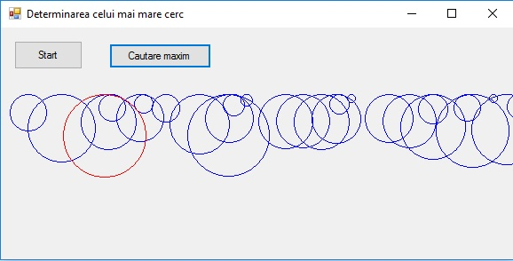

- Defuniti o structura "semnal_ac" cu doua elemente de tip int :u_n si i_n.
Folosind un vector cu ememente de tip "semnal_ac" ,trasati evolutia in timp a celor doua elemente (u_n,i_n);
- Defuniti o structura "cerc" cu doua elemente de tip int :pozitia pe x numita "poz" si diametrul unui cerc numit "diam"
Folosind un vector cu ememente de tip "cerc" ,trasati cercurile, dupa care colorati cu rosu cercul a carui raza este cea mai mare.
- Defuniti o structura "cerc" cu trei elemente de tip int :pozitia pe x numita "pozx",pozitia pe y numita "pozy" si diametrul unui cerc numit "diam"
Folosind un vector cu ememente de tip "cerc" ,trasati cercurile, dupa care colorati cu rosu cercul a carui raza este cea mai mare.
- Defuniti o structura "cerc" cu trei elemente de tip int :pozitia pe x numita "pozx",pozitia pe y numita "pozy" si raza unui cerc numit "raza"
Folosind un vector cu ememente de tip "cerc" ,trasati cercurile, pe un alt cerc dupa care colorati cu rosu cercul a carui raza este cea mai mare.
Sugestii